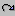

Each of the Vista graphical editors has an Undo icon and a Redo icon. Using the Undo command, you can cancel recent changes made to graphic elements in a design unit. For example, you can undo the deletion of a channel in a block diagram, or you can undo a change you okayed in the action of a state in a state machine.
You cannot undo actions that do not relate to specific graphic elements.
Saving your unit does not affect your ability to undo work, but closing your window does. When you open a window, you cannot undo changes that were made before you last closed it.
To undo the latest action or actions affecting your graphic elements, click Undo as many times as necessary:
To redo an action or actions that you undid, immediately follow the Undo command by clicking Redo as many times as necessary: 
If you make any changes affecting graphic elements after Undo, Redo does not work. Steps that don't change your graphic elements (for example, changing your zoom factor) do not count.